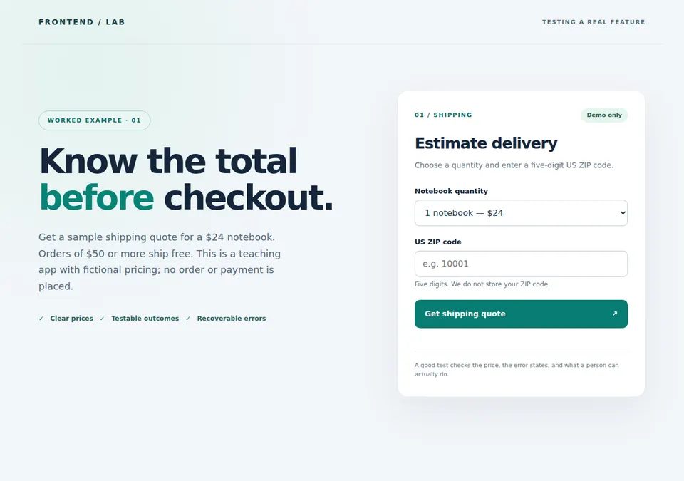
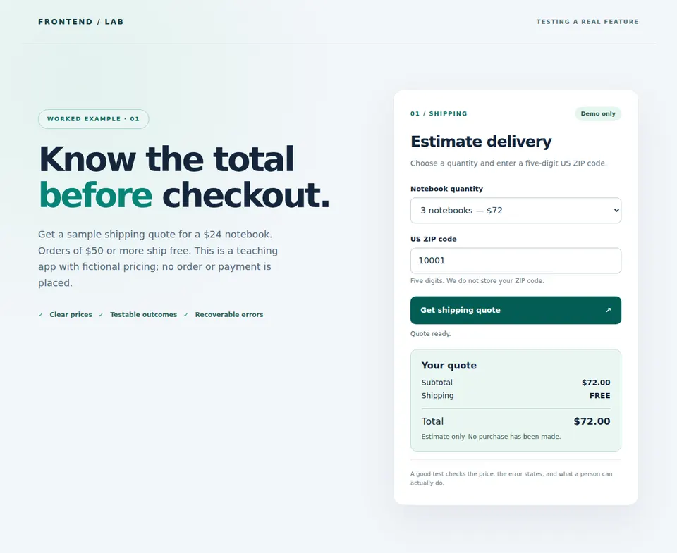
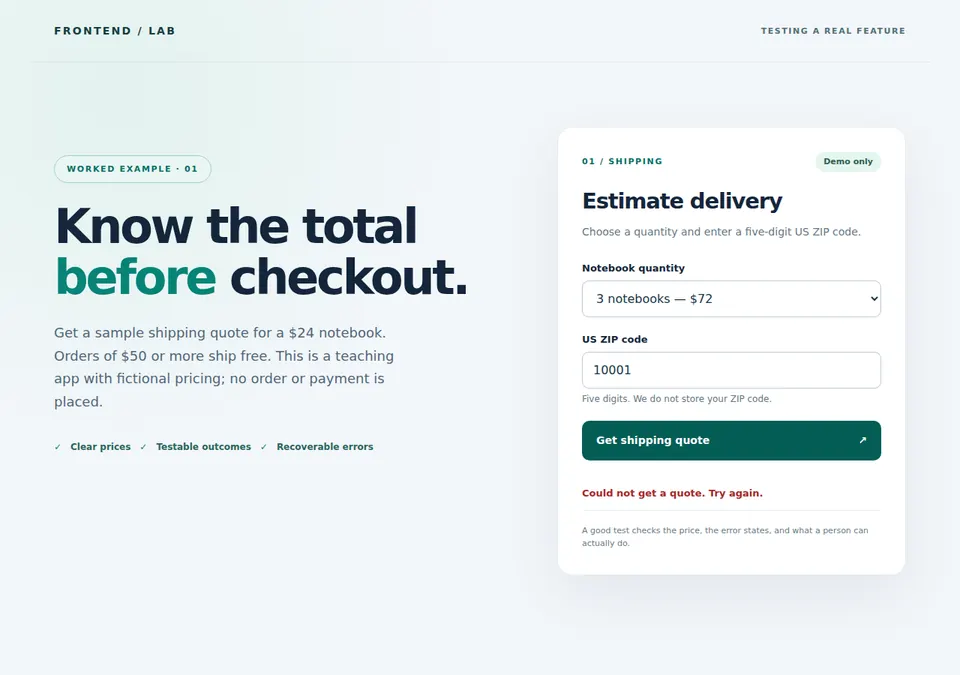
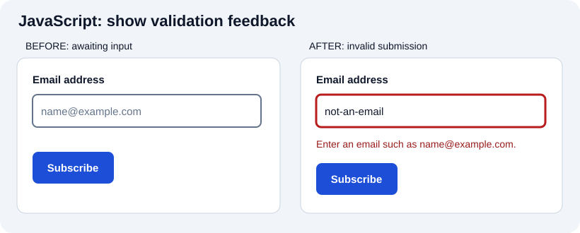
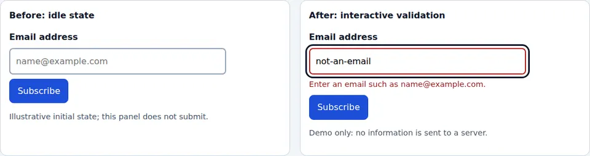

A frontend is not finished when its first demonstration works. It must still work after a CSS change, a pricing-rule update, a dependency upgrade, or a failed network request. Testing turns the promises a feature makes to its users into checks that can fail when those promises are broken. It reduces uncertainty; no passing suite proves that an application has no defects or replaces human judgment about usability, accessibility, security, and performance.
This chapter follows one small, executable application from a feature request to a pull request: a shipping-quote estimator. Instead of learning test tools as an unrelated list, you will see which failure each layer detects, run the tests, deliberately introduce a bug, and use the failure to find it. The final sections explain how the same approach applies to larger projects and which tools have documented use today.
Learning path: define a contract → choose test boundaries → verify pricing logic → verify HTTP → verify the user journey → inspect screenshots and accessibility → break and repair the feature → automate the checks in CI. All the code and images referenced below live in this repository.
Imagine a customer asks: “Before buying a notebook, can I see an accurate total including shipping?” A developer implements a form and a quote endpoint. Next week, another developer adjusts a free-shipping threshold. The page may still look perfect even if it now charges shipping incorrectly. That is the regression we want to prevent.
Our fictional application sells notebooks for $24 each, accepts a quantity of 1–10, and charges $6 shipping below a $50 subtotal; shipping is free at or above $50. A US ZIP code must contain exactly five digits, including leading zeroes. The browser calls the local POST /api/quote endpoint. A rejected request must not display a stale quote or falsely claim success. The interface must remain usable at a narrow viewport.
This is a teaching fixture, not a real carrier calculator, checkout, tax engine, or payment system. On a real project, confirm the actual policy, supported markets, rounding behavior, and error messages with the people responsible for the feature before hard-coding expected results.
| Situation | User-visible or API promise | Where to catch a regression |
|---|---|---|
One notebook, ZIP 10001 |
$24 subtotal + $6 shipping = $30 total | Unit, API, browser |
Three notebooks, ZIP 00501 |
$72 subtotal, FREE shipping, $72 total | Unit, API, browser |
Quantity 0 or 1.5 sent directly |
Server rejects invalid quantities even if the UI never offers them | Unit and real HTTP API |
ZIP oops |
Visible guidance, invalid field state, no quote | Unit validation and browser |
ZIP 00501 |
Leading zero survives input and HTTP serialization | Unit and API |
| Quote endpoint returns HTTP 503 | Recoverable error, no old or invented total, submit becomes available again | Controlled browser failure test |
| User opens the page at 375 CSS pixels | Form and total remain visible without horizontal overflow | Browser layout assertion and manual check |
This table supplies the test oracle: the expected outcome against which the actual result is compared. A test asserting only that a component renders, a button exists, or a request returned some JSON would miss the defect that matters to this customer.
Before automating, decide what a meaningful failure looks like. For a shipping rule, the free-shipping threshold is a useful boundary. For an asynchronous form, failure and retry are important states. For accessibility, a visible screenshot cannot tell you whether a label is programmatically associated with a field.
The following images were captured from the running application in Chromium by a Playwright test, not drawn as mockups. They illustrate three states; their mere presence does not prove that the corresponding behavior is correct.
Before submitting: the result is hidden until a genuine quote succeeds. The quantity and ZIP have visible labels.

A successful request: three notebooks, a five-digit ZIP, free shipping, and the $72 total returned by the local server.

The service fails: the browser test intercepts one request with HTTP 503. The old result disappears and an error message replaces success feedback.

Try the application yourself. We will revisit these states after examining the individual test boundaries.
A test arranges a known situation, performs an action, and checks an expected result. In the quote app, the initial situation is a quantity of three and ZIP 00501; the action is submitting the form; the observable result is FREE shipping and $72.00, not an internal variable named shipping.
A useful test follows the same reasoning for every layer:
Not every test needs these words in its source code. They are a way to notice missing expectations and state leaking between tests. Prefer descriptive names such as three notebooks qualify for free shipping over test 4; after a failure, a teammate should know which promise broke.
Tests should usually assert behavior at a stable boundary, not the number of functions, a private React hook value, a CSS class chosen solely for styling, or a large snapshot whose meaning no one reviews. An implementation can be refactored without changing the contract. Conversely, a snapshot can stay unchanged while a button stops working.
| Level | What it exercises in our application | What it cannot establish alone |
|---|---|---|
| Unit | calculateQuote with specific inputs |
Whether JSON, browser rendering, or network behavior works |
| Integration/API | Real HTTP server and its request/response contract | Whether a person sees or understands the result |
| Browser/E2E | Form → request → response → rendered totals | All possible business cases or real external integrations |
| Visual | Rendered appearance at a fixed state and environment | Correct price, accessible name, keyboard flow, or successful API |
| Exploratory/accessibility/device | A human's task, assistive technology, interaction, and context | Exhaustive regression coverage for every future commit |
Unit, integration, system, component, and end-to-end are descriptions of scope, not names for particular products. An integration test can connect two modules or an application to a real database; a component test may exercise a component and several real dependencies. E2E typically follows a user journey through an assembled application. The categories overlap, so describe what a test actually does rather than arguing about its label.
The familiar testing pyramid is a cost-and-feedback heuristic, not a mandated ratio. Keep many cheap deterministic checks around tricky logic, add enough boundary tests to catch broken contracts, and reserve slower browser tests for valuable workflows. A suite containing hundreds of mocked unit tests but no proof that a request reaches the server can still leave the core feature broken.
Open the runnable quote.mjs. The important business calculation uses integer cents so arithmetic is not built on imprecise decimal currency operations:
const subtotalCents = 2400 * quantity;
const shippingCents = subtotalCents >= 5000 ? 0 : 600;
return {
postalCode, quantity, subtotalCents, shippingCents,
totalCents: subtotalCents + shippingCents,
};The complete function checks that the ZIP is a string matching exactly five digits and that the quantity is a safe integer from 1 to 10. Converting 00501 to a number would destroy a meaningful leading zero; accepting any client-supplied quantity would make the server's quote unreliable.
Node's built-in test runner is enough for this dependency-free example. The actual quote.test.mjs includes this boundary case:
import test from 'node:test';
import assert from 'node:assert/strict';
import { calculateQuote } from '../quote.mjs';
test('three notebooks cross the free-shipping threshold', () => {
const quote = calculateQuote({ postalCode: '10001', quantity: 3 });
assert.equal(quote.shippingCents, 0);
assert.equal(quote.totalCents, 7200);
});Run it from the example directory:
cd projects/testing-feature
npm ci
npm run test:unitThe suite also checks one notebook, invalid or fractional quantities, and ZIP validation. Notice that a passing test for quantity three alone does not check the exact threshold at $50. In a larger product with configurable prices, explicitly test just below, exactly at, and just above the threshold. Design edge cases from the requirement rather than only repeating the example a developer happened to implement.
Why this layer matters: it gives a fast, localized failure for an incorrect comparison or validation rule. Its limit: it cannot reveal a misspelled HTTP field, broken button event, incorrect page text, or a missing label. Those require the next boundaries.
A small isolated function is useful, but isolation is not a virtue if you replace every important collaborator with mocks. If your business rule depends on a real database constraint or a serialization format, test that boundary with the actual system or a deliberately faithful fixture as well.
The browser never calls calculateQuote directly. It sends data to server.mjs, which validates the request again and returns JSON. A changed route, unsupported method, accidental string conversion, or missing error status would escape pure-function tests.
The checked-in api.test.mjs starts the real local server on an ephemeral port, sends requests, checks their HTTP status and JSON contents, then closes the listener. This representative assertion comes from that test's contract (the linked file contains the full server setup):
const response = await fetch(`${base}/api/quote`, {
method: 'POST',
headers: { 'content-type': 'application/json' },
body: JSON.stringify({ postalCode: '00501', quantity: 3 }),
});
assert.equal(response.status, 200);
const quote = await response.json();
assert.equal(quote.shippingCents, 0);
assert.equal(quote.totalCents, 7200);Another case sends quantity 0 directly and expects HTTP 400. A client-side min attribute or dropdown cannot protect a backend: callers can send their own HTTP requests. The suite also checks malformed JSON and unsupported methods. This is an integration test because it crosses the actual HTTP boundary, even though the server is local and no external carrier is involved.
When a real application also writes orders or user settings, add tests that verify persistence, authorization, duplicate submissions, and rollback or idempotency where required. Use test-specific databases/accounts and clean them up. Do not run a destructive account-deletion walkthrough against a public service or shared production user.
Suppose a third-party carrier is unavailable or expensive to call. A controlled substitute lets you test your interface's reaction to 503, a slow response, or malformed JSON without depending on a live provider. This is not the same claim as “the provider integration works.” Cover that separately with appropriate integration or contract tests.
In our browser suite, Playwright intercepts one endpoint:
await page.route('**/api/quote', route => route.fulfill({
status: 503,
contentType: 'application/json',
body: JSON.stringify({ error: 'Unavailable' }),
}));The browser must then hide the quote, show an error, and re-enable submission. feature.spec.mjs contains the full test, including the assertions. Most happy-path tests still use the real local server. Only the intentional failure case substitutes an HTTP response.
Choose interception for the environment you are testing. Mock Service Worker can handle requests at a service-worker/request boundary in supported environments; Nock intercepts supported Node.js HTTP clients, not every real-browser fetch; Playwright's page.route belongs to browser automation. Record precisely which dependency you replaced. Reset mocks between tests and assert the expected request occurred so an unused stub cannot give false confidence.
The browser is where markup, JavaScript, CSS, the network, and the server meet. Our Playwright suite starts the actual application using its configuration, gives each test an isolated browser context, and interacts through visible labels and roles rather than depending on private implementation details.
The free-shipping journey looks like this:
import { test, expect } from '@playwright/test';
test('free shipping survives a quantity change', async ({ page }) => {
await page.goto('/');
await page.getByLabel('Notebook quantity').selectOption('3');
await page.getByLabel('US ZIP code').fill('00501');
await page.getByRole('button', { name: /Get shipping quote/ }).click();
await expect(page.locator('#shipping')).toHaveText('FREE');
await expect(page.locator('#total')).toHaveText('$72.00');
});The real test file uses a shared beforeEach hook to open /; the explicit goto above makes this excerpt understandable on its own. Accessible labels locate input controls. IDs in the assertions name specific output values; for navigation and interaction, favor user-facing roles and names, or documented test IDs if no stable semantic locator exists. Avoid nth-child and positional .last() selectors unless order is the contract you truly intend to protect.
The other browser scenarios ask different questions:
aria-invalid="true", and no result?Run npm run test:e2e after npx playwright install chromium. The fixture's tests do not create accounts or place orders. A production E2E journey might also cross login, a database, and third-party integrations, which means more expensive setup and failure diagnosis. Prioritize one or two representative paths with clear business consequences rather than duplicating every unit case in the browser.
Wait for an observable state such as a visible heading or completed request instead of sleep(3000). Keep fixtures deterministic, isolate each test's data, and clean up even on failure. Record browser version, viewport, network responses, traces, and screenshots for investigation. A real race in the application is a product defect; blanket retries can hide it. A flaky test should be debugged and corrected, not trusted because it passes on the third run. See Playwright assertions and best practices.
Behavior assertions prove the quote's amounts, but a CSS edit could hide the submit button or clip the error below the viewport. Screenshot comparison is useful for detecting rendered differences—not for deciding automatically whether a design is correct.
A reproducible visual baseline needs a fixed browser/version, viewport, device scale, fonts, fixture data, locale/time zone if relevant, and stable animation/loading state. Capture an important component state as well as a full page where appropriate. Compare the screenshot with a reviewed baseline and decide whether each meaningful change is intentional. Never approve a bulk baseline update just to silence CI.
The three shipping images above are documentation captures, not golden baselines: the opt-in screenshot test writes them only when CAPTURE_DOC_SHOTS=1. To establish a visual-regression suite, add reviewed toHaveScreenshot() baselines in a pinned environment. See Playwright visual comparisons and the project's capture instructions.
A screenshot cannot prove that a button is keyboard reachable, an error is announced, or a price is mathematically right. Pair visual checks with semantic and behavioral assertions. A viewport screenshot may hide content off screen, so the browser suite separately checks scrollWidth against the viewport width.
For a second visual exercise, use the repository's form validation demo. The first image is a conceptual SVG wireframe; the second is a genuine Chromium capture, not a reviewed regression baseline:


Remove visible focus styling, focus the submit button, and capture that state. Then press Tab to inspect the focus order and confirm the error relationship separately. Identical pixels in an unfocused screenshot would miss a missing focus indicator or broken aria-describedby association.
Some important properties cut across every testing level instead of fitting into a single row of the pyramid. Our shipping example checks aria-invalid, visible errors, and basic responsive overflow automatically. That is not a complete accessibility audit.
For an accessible checkout-like form, manually try the entire flow with a keyboard: can you reach the controls, see focus, submit, understand the error, and recover? Check at 200% zoom and a narrow viewport; evaluate labels and error relationships with assistive technology. Tools such as axe-core help identify detectable issues, but automated scans do not replace screen-reader and real-user evaluation. WCAG 2.2 provides testable accessibility criteria, not a one-click score of the whole experience.
Exploratory testing is purposeful investigation beyond the prepared scripts. Try a leading-zero ZIP; press Enter instead of clicking; lose the network after submitting; change quantities while a previous request is in flight; resize the page; switch browser or device. Record the device, version, action, expectation, and observed result so findings can be reproduced. This may reveal a missing scenario worth adding to automation.
Security and performance need their own requirements. Test authorization and data handling at the server, not only visibility of frontend buttons. Use controlled security checks and appropriate review for the system's risk; passing unit tests do not make a checkout secure. Evaluate performance with representative devices/network conditions and realistic content; a single lab score does not represent all visitors. The fictional estimator includes no payment flow or real carrier integration, so its suite cannot certify either one.
A suite is useful only if it detects a relevant defect. In quote.mjs, change this line:
const shippingCents = subtotalCents >= 5000 ? 0 : 600;to the intentionally wrong rule:
const shippingCents = subtotalCents > 7500 ? 0 : 600;Run npm run test:unit: the free-shipping case for three notebooks fails near the source of the bug. Run the API suite and then npm run test:e2e: the wrong rule also changes the JSON response and the amount displayed to a visitor. The three failures represent one defect at three boundaries, not three independent defects. Revert the change and rerun. Do not weaken the expectation merely to make the suite green.
If only the unit test fails, inspect the function and test fixture. If the unit test passes but the API test fails, inspect request validation, routing, and serialization. If both pass but the browser test fails, inspect the request, UI state transitions, selectors, and rendering. This diagnostic sequence is why layering matters; a single large E2E test tells you a workflow is broken but often cannot tell you where.
When you discover a genuine bug, first write a test that reproduces the failure, confirm that it fails for the expected reason, fix the product, and keep the test. For a requirement that has changed intentionally, update the contract and tests with the product decision and review the resulting diff. Tests are executable agreements, not untouchable historical accidents.
Choose tools by which boundary you need to observe, your existing stack, and maintenance costs, not a popularity claim. A runner discovers tests, an assertion library expresses expectations, a DOM/component helper renders or queries components, a request mock controls a dependency, and a browser driver performs genuine browser interactions. Some packages combine roles. This guide uses node:test and Playwright because they match its small Node server and browser workflow, not because every project should copy the stack.
The following are documented public examples as of September 2026, not evidence of an organization's undisclosed internal tooling or market share:
| Tool or approach | Documented example or maintainer | Appropriate scope and caveat |
|---|---|---|
Node node:test and node:assert |
Node test runner; the runnable project in this repository | Logic and real-server tests with few dependencies; it does not itself automate a browser. |
| Vitest with DOM emulation | Angular testing guide says new CLI projects include Vitest and jsdom; Next.js Vitest guide |
Unit/component work with compatible setups; jsdom does not reproduce browser layout. Migrating existing Angular Karma projects is a separate documented process. |
| Jest | Next.js Jest guide | Runner, assertions, mocks and snapshots; DOM tests need configured environment, and not all asynchronous server components are suitable for unit rendering. |
| Testing Library | Guiding principles and React example | Query components through visible and accessible behavior; not a test runner. Pair with a configured runner. |
| Playwright Test | Next.js Playwright guide; this repository's shipping app | Browser journeys, network routing, screenshots and traces; install and pin browser dependencies in CI. |
| Cypress | Cypress Real World App maintained as a public example; Next.js testing overview | Component and browser workflows; check features and browser support for the installed release. Cypress Testing Library commands need their separate integration. |
| MSW or Nock | Mock Service Worker and Nock documentation | Controlled HTTP dependencies at different interception layers; never mistake a mocked response for proof of the remote service. |
| Karma, legacy | Karma maintainers mark it deprecated; Angular migration guide | Maintain or deliberately migrate an existing suite; new Angular CLI projects use Vitest by default, while existing migrations require compatibility checks. |
| Mocha, Jasmine, Puppeteer, Nightwatch, Selenium | Their respective project documentation: Mocha, Jasmine, Puppeteer, Nightwatch, Selenium | Established alternatives with different combinations of runner, assertion and browser automation. Confirm project maintenance, compatibility and required plugins before migrating. |
A framework's published guide demonstrates officially documented support or an example, not a claim that every organization using that framework runs that exact stack. When adopting a tool, check its current installation instructions, compatibility and release policy rather than relying on an old blog post or this table indefinitely.
For a project that already exists: keep its working test runner unless a concrete need justifies migration; first add a regression test around the most costly user-facing failure. In React/Vite, a configured Vitest + Testing Library suite may fit component tests. In a minimal Node project, node:test may suffice. In a browser-heavy application, Playwright or an already established Cypress setup can cover key workflows. Use one tool well before building a redundant collection of runners.
From projects/testing-feature/, use Node 20+ and run:
npm ci
npx playwright install chromium
npm run test:unit
npm run test:e2e
npm testnpm ci installs the checked-in lockfile without silently changing dependency resolution. On a minimal Linux runner, install system dependencies with npx playwright install --with-deps chromium. npm test runs both suites; running both individual commands immediately before it is useful for learning, but in routine CI you need not duplicate the same work.
The repository's permanent feature-testing GitHub Actions workflow installs dependencies, installs Chromium, runs the unit/API tests and browser scenarios, and preserves failure evidence. It runs for relevant pull requests and changes to main. If a test fails, inspect the assertion, response, screenshot or trace before considering a baseline update. Review dependency upgrades, keep browser versions reproducible, and avoid tests that accidentally talk to production.
A useful team routine is: reproduce an issue → write or adjust the failing check → fix the application → run the fast suite locally → run the browser journey → review the PR's CI evidence → deploy with an appropriate rollback plan → monitor actual behavior. Tests reduce regressions before deployment; observability and rollback handle failures tests did not predict.
The shipping estimator is a model, not a template for every domain. For a newsletter form, replace its numeric oracle with “invalid email explains the issue without claiming success; valid input triggers the intended request; server rejection remains recoverable.” The repository's existing validation demo is visual and sends no real signup request, so it cannot serve as evidence for a live mailing-service integration. Build a controlled endpoint fixture before claiming that boundary is covered.
For registration and account deletion, use isolated accounts, test authorization and recovery rules, and clean up even when a test fails. For a context menu, a browser action such as right-click or keyboard invocation only proves functionality when your application implements those interactions; an ordinary HTML button does not automatically create a custom context menu. For a Roman-numeral converter, add tests for invalid notation and empty input as well as successful conversions. These features have different contracts, but the reasoning stays the same: promise → example → boundary → assertion → regression → CI.
Practice exercise: choose one feature in your own app and write a six-row contract table: ordinary success, relevant boundary, malformed input, server failure, keyboard interaction, and narrow layout. Implement the smallest reliable check for each; explain in the PR which failure remains manual or out of scope. If you cannot describe what a failing assertion would mean, reconsider the assertion before adding more tests.
Tools below assess specific properties, not an overall product-quality score. They complement the feature tests; they do not prove that a user can finish a task or that every visitor experiences the same performance. External services change: verify their current availability, terms and privacy implications before submitting a private URL or customer data.
Further reading: MDN's web testing material, Node test runner, Playwright, Cypress, Selenium, Testing Library, WCAG 2.2, and the complete executable shipping example.